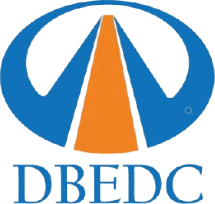
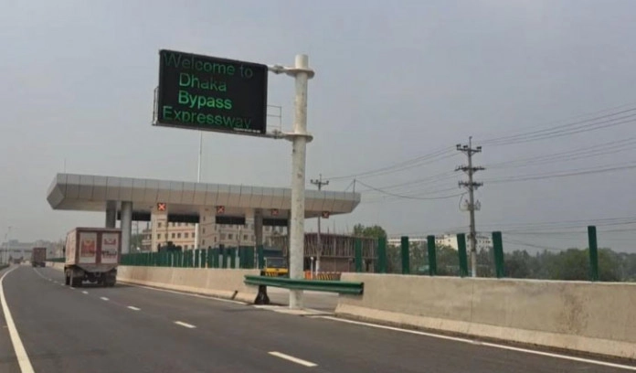

Connecting Bangladesh's Infrastructure
Building the first fully access-controlled expressway to transform national connectivity
Project Overview
Transforming Bangladesh's Transportation Infrastructure
The Dhaka Bypass Expressway is Bangladesh's first fully enclosed highway, spanning 48 kilometers from Joydebpur (Gazipur) to Madanpur (Narayanganj). This vital arterial route connects four national highways (N1, N2, N3, N4) and provides an efficient pathway around the capital, linking northern industrial areas to southern ports.
Developed by Dhaka Bypass Expressway Development Company (DBEDC), the project represents a landmark public-private partnership between Sichuan Road & Bridge Group (SRBG), Shamim Enterprise Ltd (SEL), and UDC Construction Ltd. This consortium is responsible for the design, build, finance, operate, and maintain (DBFOM) tasks under a 25-year concession agreement.
Upon completion in July 2025, this state-of-the-art expressway will transform travel around Dhaka with four main carriageways, service roads on both sides, and fully grade-separated interchanges, cutting the journey time from Gazipur to Madanpur from 2 hours to just 30 minutes.
Learn more about the project
Bangladesh's First
Fully Access-Controlled Expressway
48 km
Total Expressway Length
75% Reduction
In Travel Time
1st PPP
Road Project in Bangladesh
25 Years
Concession Period
Economic Impact
Creating Sustainable Value for Bangladesh's Growth
The Dhaka Bypass Expressway is having significant economic impact. As a connector that intelligently links production zones with ports, it enhances Bangladesh's supply chain reliability and trade competitiveness by creating an efficient freight corridor linking manufacturing and export processing zones in northern Bangladesh to Chattogram Port.
Upon completion, the expressway will cut journey time from Gazipur to Madanpur from 2 hours to just 30 minutes – a 75% reduction that translates directly to fuel savings, lower vehicle operating costs, and improved productivity for businesses. Diverting traffic from city roads will save millions of dollars in lost time and fuel that would otherwise be spent in traffic jams.
The project has already created 1,000+ jobs during construction with this number expected to double to approximately 2,000 at peak construction. The project represents a total investment of around ৳3,585-3,723 crore (approximately US$350-412 million) into Bangladesh's infrastructure, mobilizing both domestic and foreign capital under an innovative PPP structure.
Areas along the bypass route (Gazipur, Narayanganj, Narsingdi districts) are experiencing new economic opportunities, with improved connectivity attracting industrial parks, warehouses, and real estate development. The expressway aligns with the Asian Highway network and supports the Greater Dhaka urban expansion, thereby decentralizing growth from the capital.


Expressway Route
Connecting Communities and Commerce
The Dhaka Bypass Expressway spans 48 kilometers from Joydebpur (Gazipur) in the north to Madanpur (Narayanganj) in the south. This strategic route connects four major national highways (N1, N2, N3, N4), creating an uninterrupted corridor around eastern Dhaka.
Key interchanges include Vogra, Mirer Bazar, Purbachal, Bhulta, and Madanpur, providing crucial connectivity to industrial zones, new urban developments, and transportation networks. The expressway features 12 bridges, 7 flyovers, and 27 underpasses.
Experience the Future of Transportation in Bangladesh
Discover how the Dhaka Bypass Expressway is creating connections and transforming communities with state-of-the-art infrastructure.